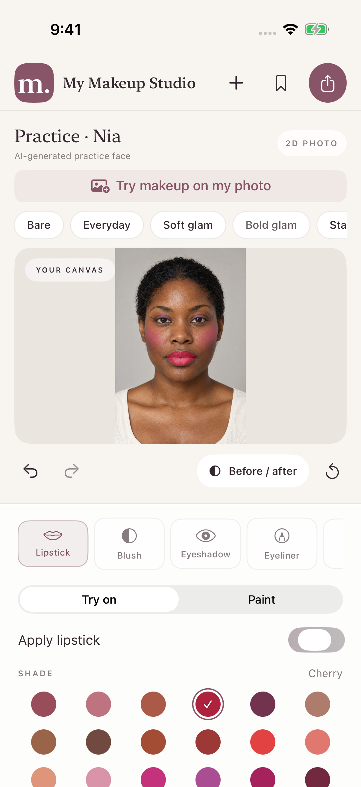
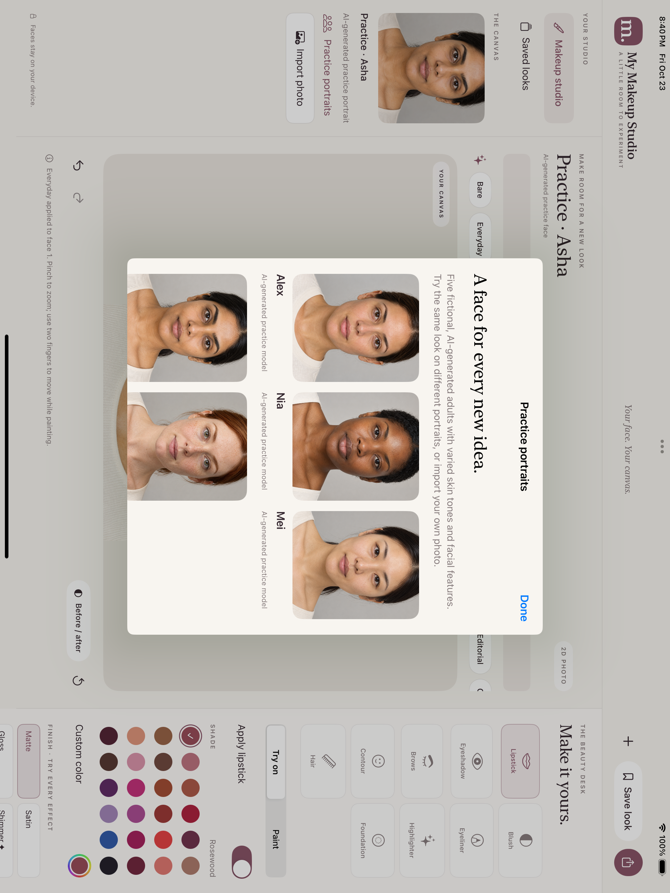

Start with you.
Import a favorite portrait or take a photo. On a group photo, choose the face you want to edit. Built-in practice portraits let you explore first.
The berry lip. The bolder blush. The wing you’ve been wanting to try. Preview makeup on your own photo and make every detail yours.
Explore your studio ↗For iPhone and iPad · Coming to the App Store

Import a favorite portrait or take a photo. On a group photo, choose the face you want to edit. Built-in practice portraits let you explore first.
Pick a preset, then play with lipstick, blush, contour, eyeshadow, liner and more. Tune color, placement and intensity. Paint a hair mask to try a new hair color.
Tap Before / after to revisit the original. Save an editable look or export your finished photo. Free effects export without a watermark.
Build a soft cheek wash or a statement look. Explore eight eyeliner styles and seven finishes, including optional shimmer, glitter, metallic and glow packs.
On iPad, use Apple Pencil for pressure-sensitive brushwork and precise touch-ups. Start with three saved looks for free.

No account needed. Photos and facial landmarks are processed on your device. Optional packs unlock specific effects; Premium unlocks every pack and unlimited saved looks.
Explore free tools and paid optionsA creative photo preview. Real makeup can look different depending on lighting, your screen, skin texture and application. Colors are illustrative, not matches to specific branded cosmetics.